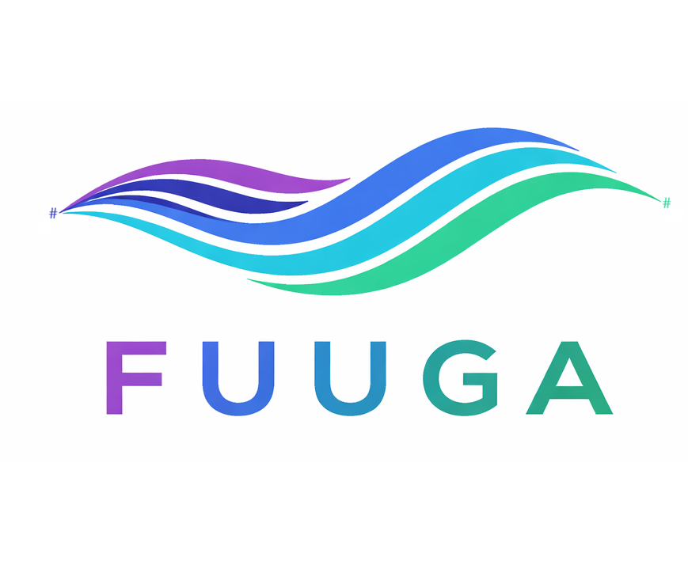

Hietanen Consultancy · Seed round · September 2026

Train, fine-tune, compress and serve your own language models — in F# and .NET, with no Python and no data leaving the building.
Confidential · hietanen.co.uk · nuget.org/packages/Fuuga